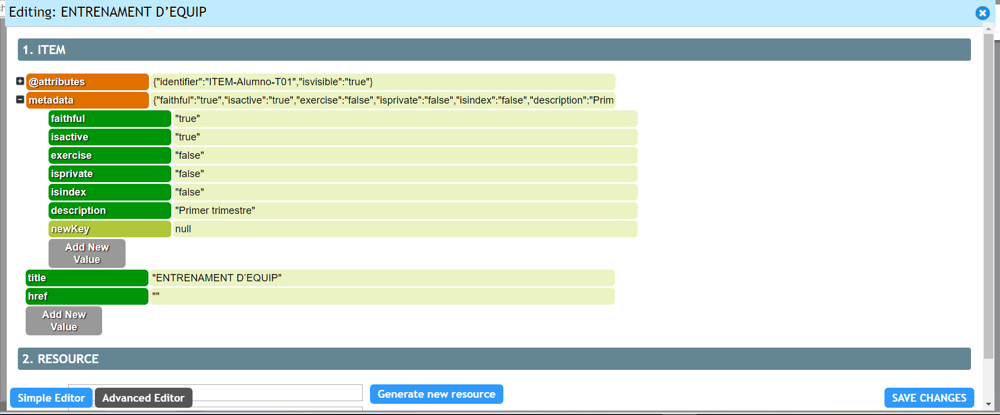
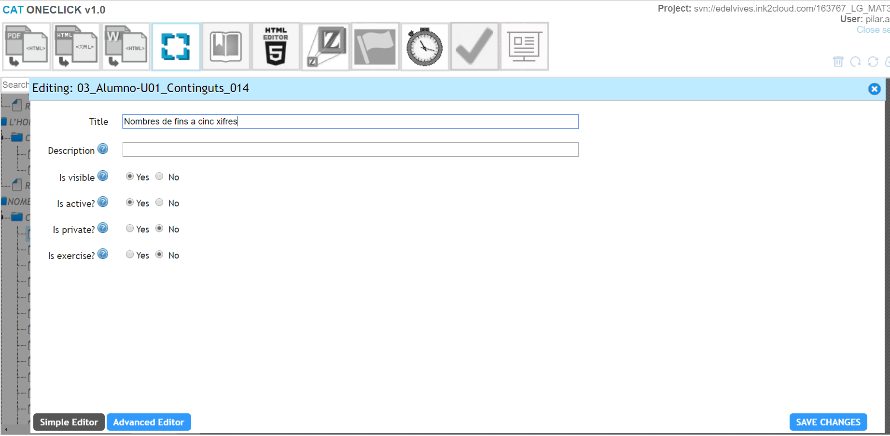
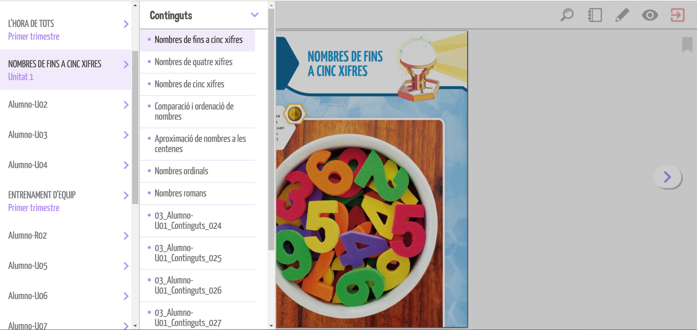

En este manual vamos a ver como se organizan y nombran las páginas en un libro, sus epígrafes, y múltiples características de manejo de la herramienta para poder conseguir el resultado deseado por la editorial. Combinando las diferentes opciones que vamos a ir viendo, se pueden obtener diversos resultados, por lo que es imposible abarcar todos los casos posibles. Comenzaremos realizando un ejemplo con un libro perteneciente al proyecto Legado, aunque en otros proyectos, las opciones pueden variar. A medida que un editor esté familiarizado con la herramienta, será capaz de combinar las opciones, para poder conseguir un resultado final u otro.
Para poder logarse en el CAT es necesario disponer de:


Como ya indicamos en manuales anteriores, el TOC es el menú lateral izq. de la herramienta “Makers editor” en el que se encuentran todas y cada una de las pág. que contiene nuestro libro:
Para la preparación del TOC, es necesario tener en todo momento abierto el archivo pdf de la unidad o parte del libro que estemos generando.
Comenzaremos la explicación con una unidad intermedia, ya que las unidades especiales tipo introducción, repaso o trimestral, tienen características especiales.
Abrimos el pdf de la unidad 1, en nuestro caso de ejemplo el archivo: 03_Alumno-U01_Continguts.pdf de la carpeta PDF del repositorio:

En el cat, sobre el TOC, elegimos el ítem correspondiente con la misma unidad, que será la carpeta que contiene todas las pág. que comienzan con el mismo nombre del archivo pdf seguidas del nº de pág. real de impresión:
Haciendo doble clic sobre el ítem, se nos abre la pantalla de edición, en su modalidad de “Simple Editor”
En el campo Title copiamos y pegamos el título de la unidad existente en el pdf (ojo, revisar que todos los caracteres se han pegado correctamente, ya que a veces podemos arrastrar algún formato no deseado, si esto ocurriera, debemos eliminar formato en un editor externo al cat) y en el campo Description la unidad a la que corresponde, teniendo especial cuidado en ponerlo en el idioma concreto del libro que estemos montando. En este caso, el resto de opciones disponibles en esta pantalla se dejan como vienen por defecto:

Pulsamos Save changes y esperamos a que nos salga mensaje de comit efectuado y que se recargue automáticamente el TOC:

Habitualmente, si los títulos de unidad van en mayúscula en el pdf, irán de la misma manera en el TOC para dar coherencia a la versión digital con el libro impreso, aunque es un extremo que nos deben confirmar desde editorial.
Todas las demás unidades se irán renombrando del mismo modo. En el caso de las unidades especiales, deberán darnos las pautas deseadas desde editorial. En el ejemplo que nos ocupa perteneciente al proyecto de Legado se nombrarían de la siguiente manera:
En el caso de las unidades trimestrales en el proyecto de Legado, hay que realizar un paso más avanzado para que el posterior enlace de las actividades especiales o “tipo bat” se ubiquen en el apartado correspondiente. El enlace de actividades será objeto de otro manual posterior, sin embargo, hay que dejar preparada la unidad correspondiente. Una vez hemos completado los campos del Simple Editor, pulsaremos el botón de Advanced Editor, se nos abre una nueva pantalla:

Desplegamos el campo metadata pulsando el +:

Pulsamos Add New Value:
En el campo newKey teclearemos: description_script_activity y en el campo null teclearemos: "Trimestre t1" (siendo t2 y t3 en el caso de los otros dos trimestres)

Pulsamos SAVE CHANGES y esperamos como en el resto de casos anteriores a que el comit se haya producido para continuar renombrando.
Estas unidades especiales (Intro, R, T, etc), se renombraran de diferente manera, dependiendo del proyecto en el que nos encontremos, por lo que habrá que consultar con editorial antes de comenzar el montaje de los libros.
También comenzaremos la explicación con una unidad intermedia, ya que las unidades especiales tipo introducción, repaso o trimestral, tienen características especiales (mismo motivo que antes).
Abrimos el pdf de la unidad 1, en nuestro caso de ejemplo el archivo: 03_Alumno-U01_Continguts.pdf de la carpeta PDF del repositorio:
En el cat, sobre el TOC, elegimos el ítem correspondiente con la primera página de misma unidad, que será la carpeta que contiene todas las pág. que comienzan con el mismo nombre del archivo pdf seguidas del nº de pág. real de impresión.
Hacemos doble clic en el ítem y se nos abrirá el editor de nuevo, como en el apartado anterior. Normalmente la primera página se denomina igual que el título que hemos colocado en el epígrafe de la unidad. Sin embargo, para una mayor coherencia en el índice posterior que veremos en la plataforma, este título irá en minúsculas (Nombres de fins a cinc xifres). El campo description se deja vacío, y de momento el resto de opciones como vienen por defecto:
Las siguientes páginas que existan en el pdf, hasta que nos encontremos un nuevo epígrafe, se denominarán del mismo modo, ya que se trata de pág. que pertenecen al epígrafe que acabamos de crear.
En este caso, la 2ª pág. o posteriores que sean pertenecientes al epígrafe anterior, además de mantener el nombre, deberán tener la opción habilitada de is visible=no, para que no se nos muestre el mismo título más de una vez:
Observaremos al refrescarse el TOC, que este título nos aparece en un tono más claro, lo que indica a simple vista que la opción is visible=no ha sido activada:
Por ultimo, dado que esta página pertenece al epigrafe anterior, debemos descolgarla como item hijo, arrastrandola mediante el cursor y dando al save que nos aparece en la parte superior del TOC:
Esperaremos a que nos salga el mensaje de que el comit se ha realizado y se refresque el toc, para continuar con el proceso:
Se repite el proceso en todas y cada una de las pags de nuestro libro hasta que tengamos todas perfectamente renombradas y colocadas. Basta con ir siguiendo el pdf de cada tema añadiendo cada epigrafe nuevo del pdf como título, y el resto de las páginas que lo conforman se descuelgan de él como items hijos y título identico con opción is visible=no.
Una vez se genere el libro en la plataforma (se explicará en manual posterior cómo se realiza), el proceso de renombrado se iría viendo así:
Como podemos observar, los títulos que hemos ido dejando con la opción is visible=no, no se muestran en el índice del libro en el apartado de contenidos (en este caso continguts por el cambio de idioma).
Podría darse el caso de que existiera una página en la que tenemos más de un epigrafe que deba aparecer en el apartado de contenidos. Para realizar esta operación necesitamos realizar un clonado del item. A pesar de que en el TOC del cat veamos la página duplicada, dicha página no se mostrará 2 veces. Mostrará los dos títulos en el indice, mostrará la pagina en cuestión si pinchamos en cada uno de ellos, pero sólo la mostrará una unica vez si nos desplazamos con las flechas laterales recorriendo cada una de las paginas del libro.
En primer lugar, renombraremos el ítem de la pág. 25 tal y como veníamos haciendo hasta el momento: title= Cap problema! / Is visible=no
Antes de arrastrarlo como hijo del epígrafe cabecera (pág. 24) hacemos un solo clic sobre el ítem lo que nos activa una barra de opciones junto al nombre. La segunda de las opciones disponibles indica “Clone ITEM”, y pulsamos sobre ella:
Una vez que la herramienta termina el copiado y se refresca el TOC, observaremos que nos ha creado un ítem hijo del seleccionado, con el mismo title y las mismas características (en este caso no visible):
Editamos el ítem clon que acabamos de clonar, lo renombramos como corresponde y en este caso le pondremos is visible=Si, ya que se trata de un nuevo epígrafe a mostrar:
Ya sólo nos queda recolocar cada item a su posición correcta como item hijo de un epígrafe anterior, o epigrafe:
Siguiendo estas pautas, iremos renombrando todas las páginas de cada una de las unidades, hasta que hayamos completado la totalidad del libro:
En el caso de las unidades tipo R y T, no requieren mención especial, dado que no hay más que seguir el pdf correspondiente utilizando las pautas indicadas en el apartado anterior.
La unidad Intro, si suele tener un tratamiento especial, ya que como recordaremos, al inicio del proceso tuvimos que insertar 3 páginas en blanco que ocupaban las posiciones de la cubierta del libro y el índice, para conseguir que la paginación fuera coincidente con la realidad.
Iremos por tanto en el TOC al item correspondiente a la pag 1 que corresponde a la cubierta. Si la editorial no nos ha proporcionado la imagen de la misma, seguiremos manteniendo la pág en blanco (esta se podrá sustituir más adelante cuando nos la suministren)
Renombraremos el item como Cover y lo colocaremos justo debajo del item que se ha generado por defecto en el manifiesto denominado Cubierta:
Borramos el item Cubierta:
Editamos de nuevo el item cover, llamandolo ahora cubierta y con propiedad is visible=no
El utilizar el doble nombre y la diferencia del tipo de visibilidad, es simplemente para tener claro cual es el item a borrar. Podría renombrarse desde el principio y darle el tipo de visibilidad necesario, sin embargo, en ocasiones, esta practica puede dar lugar a error y borrar el item correcto (este lleva el dato del número de página, dato necesario para el correcto funcionamiento de la database y por tanto el buen funcionamiento a nivel de navegación del libro publicado en la plataforma)
La páginas 2 y 3, también son 2 páginas en blanco que se añadieron al inicio del proceso. En este caso, ninguna de las 2 páginas van a formar parte del libro digital, ya que el índice no es necesario puesto que la plataforma ya contiene su propio indice desplegable accesibe en cualquier parte del libro.
Ambas páginas deben ser eliminadas. Su correcta eliminación requiere varios pasos:

comiteamos esta carpeta:
y volvemos a updatear el proyecto desde el cat: